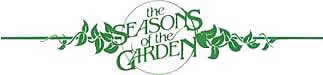
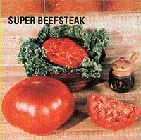

Chill winds whistle down corridors of creaking trees . . . as sleet sizzles on a carpet of cold-crisped leaves. But water still flows in the ice-crusted streams, and beneath the blanket of snow seeds sleep, awaiting the awakening touch of spring's warm hand. Lay your plans and dream in contentment of the garden to come, for the sowing time approaches.
Compactness continues to be the garden watchword in 1983, and the seed companies will be introducing many new space-saving varieties. Burpee, for example, takes pity on the cantaloupe-lover who's short on garden space by offering Honeybush, a fullsized (2-1/2- to 3-pound) melon that grows on bushy vines about 5 feet long. Honeybush is reported to have a small seed cavity and to be fusarium-wilt-tolerant. The plants can be spaced every 1-1/2 to 2 feet, in rows 3 to 4 feet apart.
Burpee's Green Bouquet basil can produce a trim 12-inch-high hedge around your flower or vegetable garden. The compact, rounded plants will also flourish on windowsills, providing a year-long crop of leaves for seasonings or pesto. Another Burpee compact is the Crispy Hybrid pepper, which sets a heavy crop of 3- by 3-1/2-inch fruit on tidy 15-inch-tall plants. You can begin to harvest these saladmakers just 70 days after setting out the transplants.
At the other extreme, Burpee's Super Beefsteak tomato is anything but small. These 80-day 'maters are claimed to average 17 ounces . . . but our test planting this past year produced quantities of 1-1/2pound beauties. Better still, unlike many large varieties, Super Beefsteak has a smooth skin and a small blossom-end scar. There's lots of tangy tomato flavor, and inbred resistance to verticillium, fusarium, and root-knot nematodes.
Disease resistance is also an important feature of Burpee's Early Pride Hybrid cucumber. An all-female variety (every blossom sets a fruit, producing huge harvests), Early Pride has good tolerance for mildew and mosaic diseases. The harvest begins early, too - about 55 days after setting out - and the 2 by 8-inch cukes are good for slicing, salads, and pickling. And, even though it's not a compact type, Early Pride can be kept in line if it's trained on a space-saving trellis or fence.
There's also a new cucumber that is dwarfed in habit . . Bush Pickle, a 1983 introduction from Park Seeds. This variety produces an abundance of small gherkin-shaped fruit on compact, thick-stemmed plants, and cropping will commence just 46 days after the seedlings are set out. Park's real breakthrough in cukes for 1983, though, is a European type . . . and the first completely seedless variety (like those that often sell for over a dollar each in fancy grocery stores) that's suited for outdoor growing. Sweet Success (an All-American winner that's available from both Park and Nichols) produces crisp, slender, thin-skinned 14-inch fruit on 6-foot vines . . and exhibits multiple-disease resistance.
Park also claims that it's introducing the hottest pepper ever listed in its catalog. It's called Thai Hot, in honor of the role it plays in Oriental cuisine. The inch-long red, green, and yellow fruit covers diminutive 8-inch-tall plants, making Thai Hot perfect for container or hanging-basket gardening. And, for folks who like their peppers "cool", Park has Sweet Pickle, with crispy 2-inch pods that match the color range of ornamental peppers: orange, red, yellow, and purple. This early-fruiting variety is sweet and thick-walled, and it grows prolifically on plants just 12 to 15 inches high.
To complete its summer salad introductions, Park has come up with Mission, an iceberg lettuce that has shown exceptional resistance to heat. Its dense, tight heads are up to 8 inches across . . . can be harvested in 74 days . . . and retain their sweet flavor to maturity.
Also new from Park in 1983 are Pretty Pops ornamental popcorn (with red, yellow, black, brown, and purple kernels) . . . Cantaloupe Fruit Punch (16-inch melons with honeydew-like flesh and netted rinds that resist splitting) and Cantaloupe Ogen (a green-fleshed, Charantais-type fruit).
Melons play an important part in the list of new compact varieties from Thompson & Morgan, the English-based seed house. The firm is introducing Sugar Jade watermelon (which bears 16-pound fruit on vines that spread just 2 feet in each direction), and Gaylia cantaloupe (which sets quantities of 2-pound melons on highly mildew-resistant vines). Sugar Jade is said to have the highest sweetness level ever recorded for a watermelon, and Gaylia won out over 25 other contenders in T & M's taste tests.
Florida Petit is another space-saver from Thompson & Morgan: In just 57 days after sowing (not transplanting), this pocket wonder will bear quantities of tasty 1- to 1-1/2-inch tomatoes. You can grow Florida Petit outdoors (a direct sowing in May is said to produce ripe fruit before early varieties that were started inside in March!) or indoors (give a plant a 4-inch pot, and it'll bear as well as its garden counterpart).
Sweet corn is hardly a compact crop, but it's so darned good that many gardeners manage to make space for it. And according to Thompson & Morgan, Frosted Gold - touted as the world's sweetest corn - gives them even more reason to do so in 1983. An F2 hybrid that combines the shrunken kernel gene (for slow conversion of sugar to starch) with an inbred line of sugary genes, Frosted Gold is early (72 days) . . . produces high yields . . . and has a superior rate of germination compared with the other "extra sweet" cultivars.
The folks who developed the Sugar Snap pea have turned their attention to string beans, and Jumbo is the pleasing result. Bred from noble parents (Romano and Kentucky Wonder), Jumbo is a bush bean that sets huge crops of slender green snappers that will grow up to 12 inches long! Their flavor is superb, especially if you pick them young (at the 6- to 8-inch stage). Seed for Jumbo is available from Thompson & Morgan, Park, and Nichols.
EDITOR'S NOTE: For the addresses of the seed companies mentioned here - and those of a number of other firms - turn to the listing on page 26.
If the idea of developing your own dwarf fruit trees (you can have as many as five apple varieties growing from one rootstock) appeals to you as much as it does to me, you'll want to know about the mail order course in grafting and propagation developed by the folks at Wolf River Farm (Dept. TMEN, P.O. Box 73, Buskirk, New York 12028). The course consists of four fully illustrated installments, which are shipped at the appropriate times of the year: February for dormant grafting, May for layering, August for budding, and October for growing rootstocks from seed. You can order the text alone for $38.95 ... the text plus a grafting kit (a knife, grafting wax, a top-working chisel, grafting tape, and rubber budding sticks) for $58.95 , .. or the whole shebang - which includes everything listed above plus a bundle of East Malting 7 semidwarfing apple rootstocks, a package of fruit and nut seeds for growing more rootstocks, and a lifetime membership in Wolf River's consultation service - for $89.95. The course not only covers all the basics, but throws in a bunch of "old European grafter" tricks to boot. I'll be using it this spring.
|
 |
 |
|